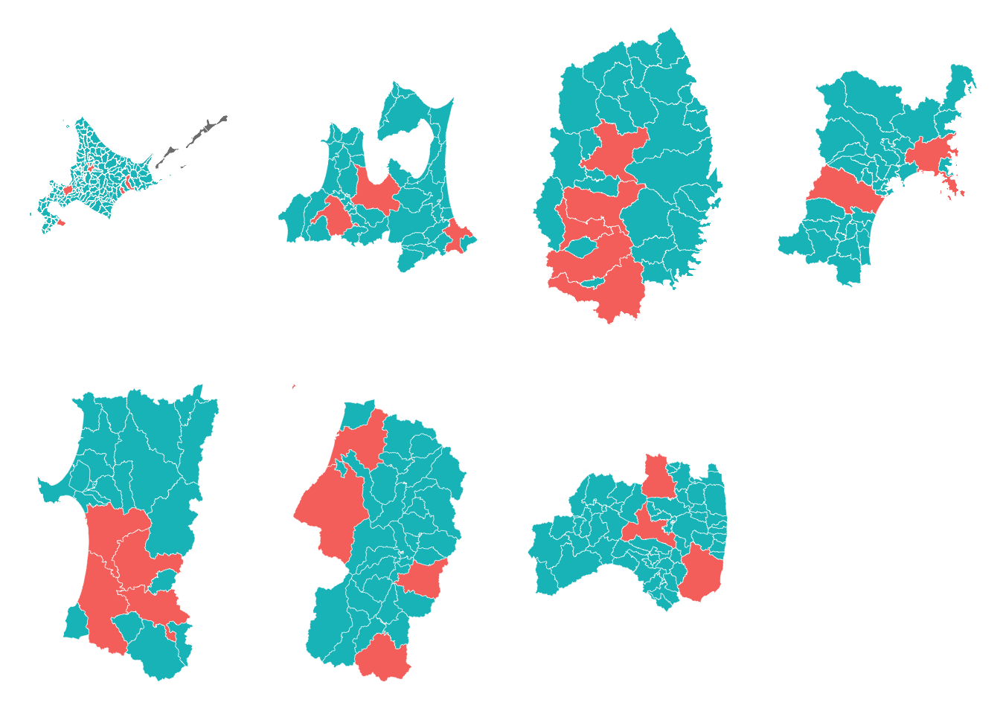
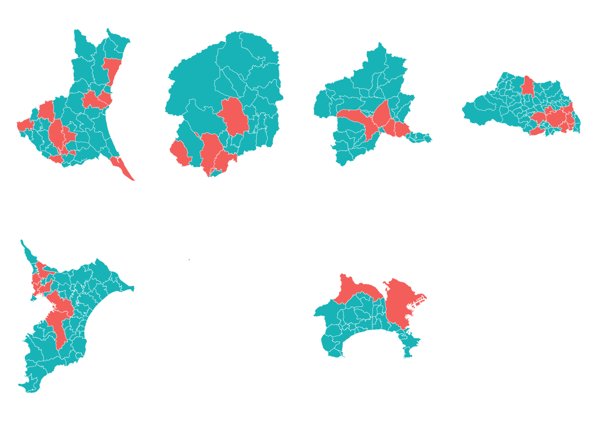
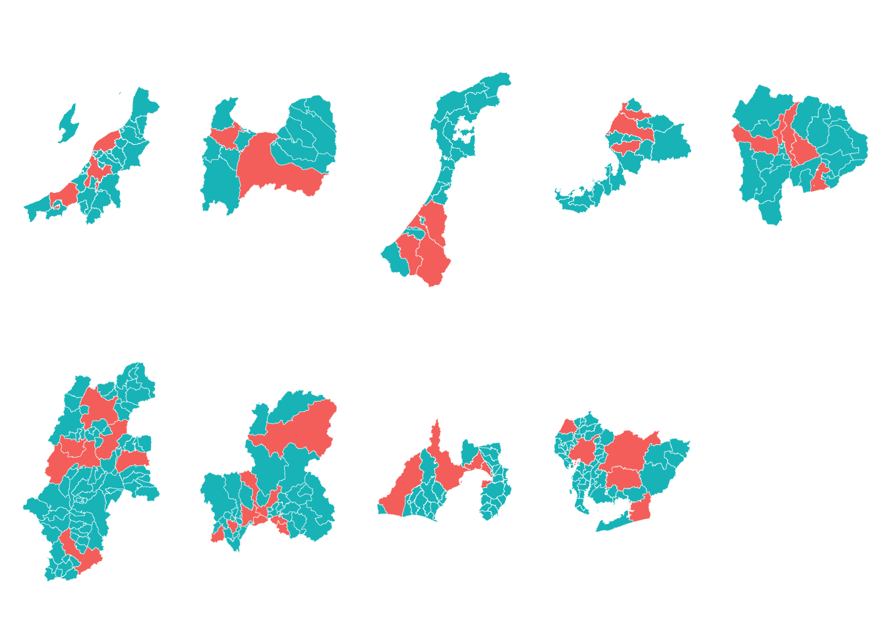
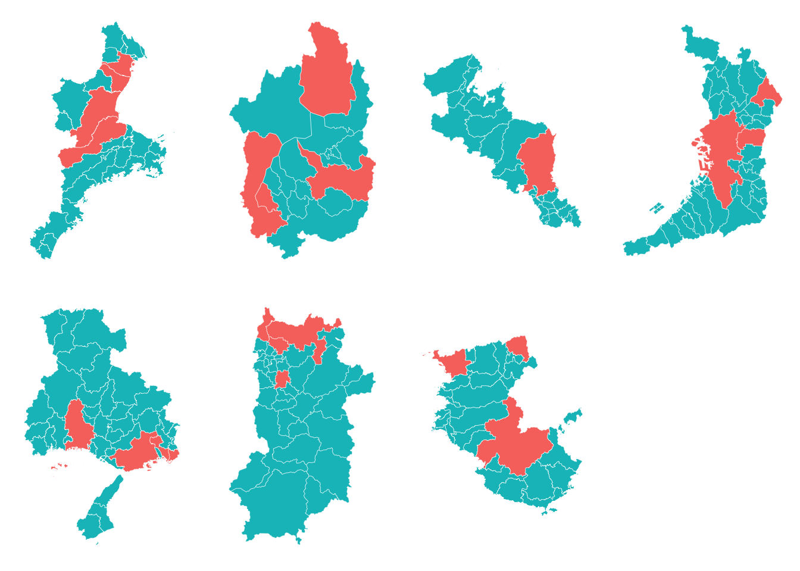
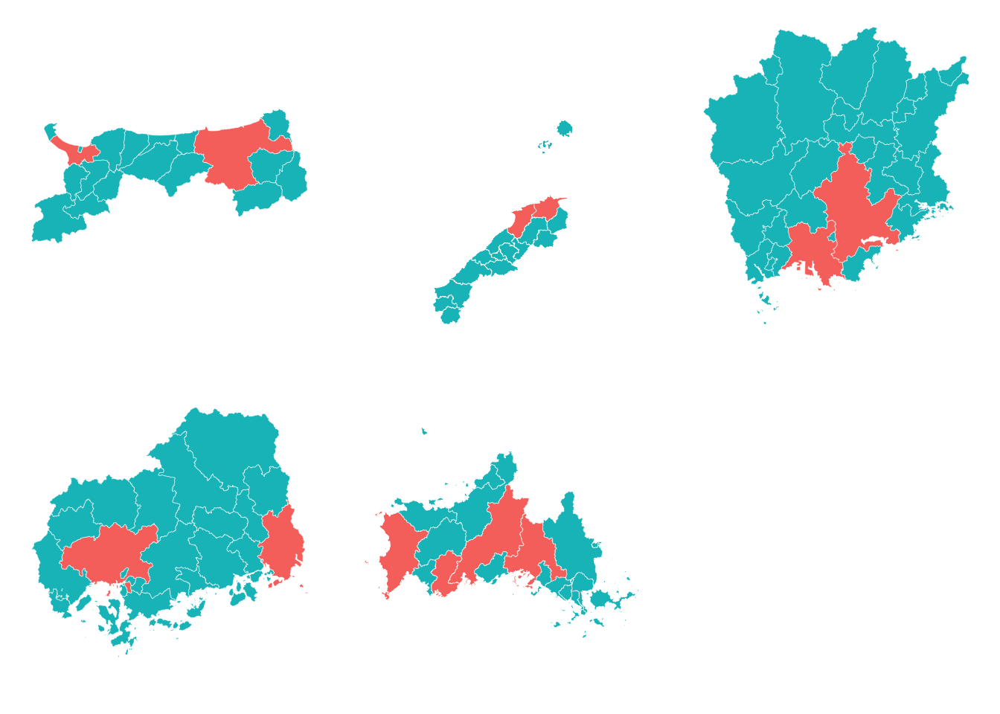
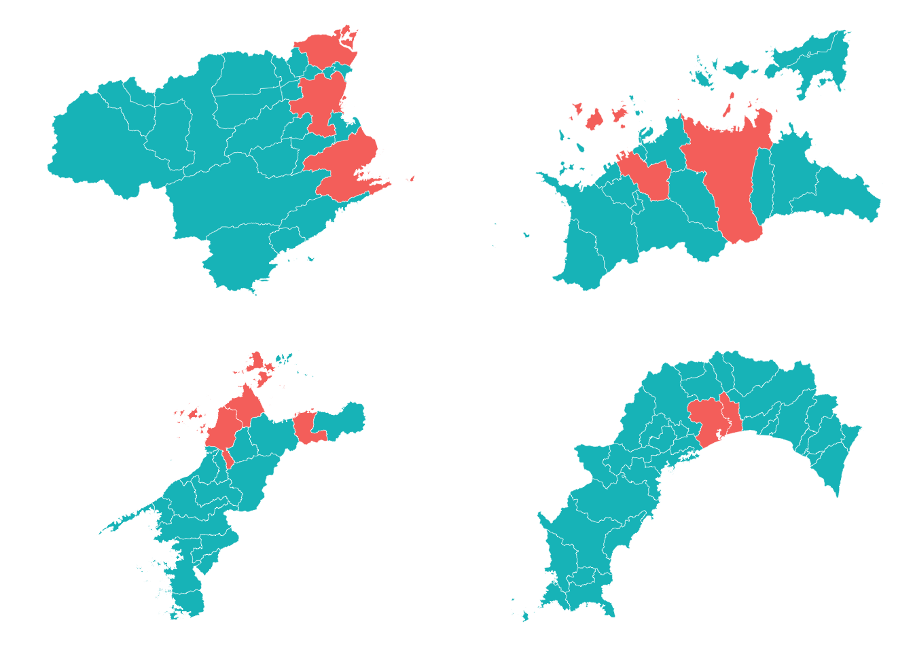
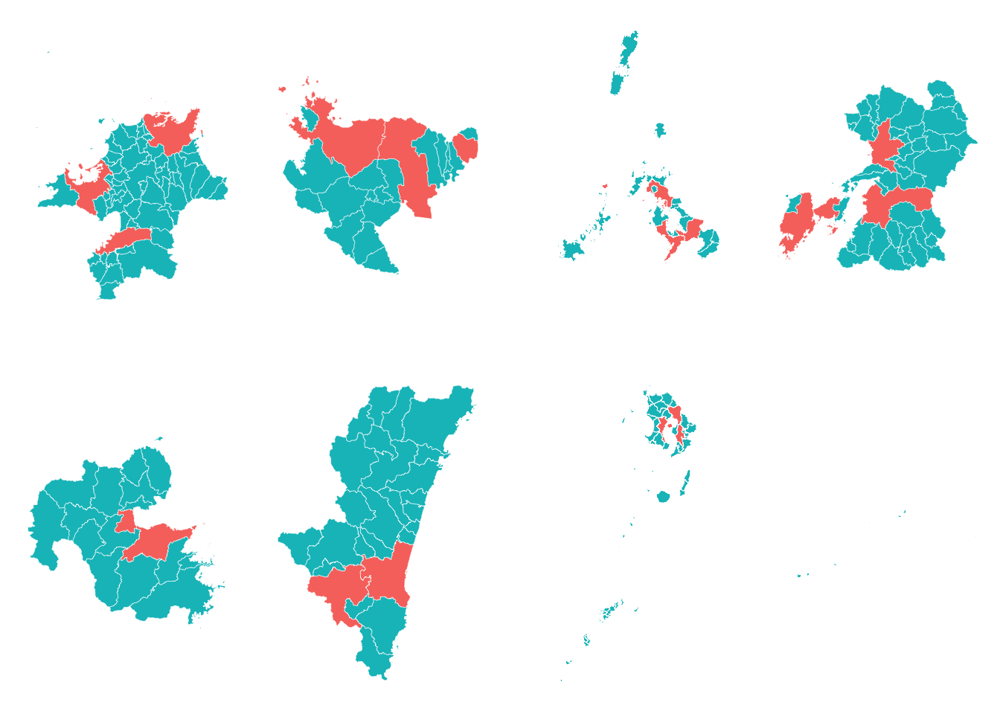

都道府県の市区町村を人口で2分割するやつ: 全国版
市区町村ごとの人口数によって、都道府県を2分割するというやつをRでやってみる、の全国版
前回、都道府県の市区町村を人口で2分割するやつのコードを書いたので、関数化して全国版の地図を作ってみる。
あらかじめ人口データだけは用意しておく必要があるので、前回同様{estatapi}でデータをダウンロードして加工しておく。
gg_pref_split()という関数がそれ。pref_codeで対象の都道府県（コード）を指定する。プロットおよびラベルの描画は引数で変更可能。フォントも適当に変えられる。
gg_pref_split <- function(pref_code = 33, plot = TRUE, label = TRUE, label_font = "IPAexGothic") {
p.code <- sprintf("%02d", pref_code)
data.result <- d.pops %>%
dplyr::filter(pref_code == p.code)
res <- list(data = data.result)
if (plot == TRUE) {
sp.pref <- jpndistrict::spdf_jpn_pref(code = p.code, district = TRUE) %>%
dplyr::mutate(city_name = dplyr::if_else(grepl("区$", city_name_full), city_name_, city_name),
city_code = ifelse(grepl("区$", city_name_full),
paste0(substr(city_code, 1, 3), "00"),
as.character(city_code))) %>%
dplyr::select(city_name, city_code)
d.admin <- jpndistrict::spdf_jpn_admins(code = p.code) %>%
dplyr::mutate(name = gsub("(役所|役場|役場（移転中）)$", "", name)) %>%
dplyr::filter(type == 1, !grepl("区$", name))
d.map <- sp.pref %>%
ggplot2::fortify(region = "city_code") %>%
dplyr::left_join(data.result, by = c("id" = "area_code"))
plot.result <- ggplot() +
ggplot2::geom_map(data = d.map,
map = d.map,
aes(x = long, y = lat, group = group, map_id = id, fill = type),
color = "#FFFFFF", size = 0.1) +
ggplot2::coord_map() +
ggthemes::theme_map(base_size = 12, base_family = label_font) +
ggplot2::guides(fill = FALSE)
if (label == TRUE) {
plot.result <- plot.result +
ggplot2::geom_point(data = d.admin@data, aes(x = longitude, y = latitude)) +
ggrepel::geom_text_repel(data = d.admin@data, aes(longitude, latitude, label = name, family = label_font))
}
res <- list(data = data.result,
plot = plot.result)
}
return(res)
}library(ggplot2)
library(ggrepel)
# library(gridExtra)gg_pref_split(13)のように実行すれば都道府県の人口2分割図が描画される。赤い行政区が都道府県人口の5割以上を占め、青い行政区は5割未満となっている。
というわけで{purrr}を使い47都道府県の結果を見てみる。地方別に表示するが、北海道と東北、九州と沖縄はそれぞれ同一のグループとして扱う。
library(purrr)
data("jpnprefs", package = "jpndistrict")
plots <- jpnprefs %>%
split(.$jis_code) %>%
map2(., names(.), ~ gg_pref_split(pref_code = as.numeric(.y), plot = TRUE, label = FALSE) %>% use_series(plot))
gg_pref_split_region <- function(regions = NULL) {
pref.range <- jpnprefs %>% dplyr::filter(region %in% regions) %>% use_series(jis_code) %>% as.numeric() %>% range()
tmp <- plots %>% as.vector()
res <- do.call(gridExtra::grid.arrange, c(tmp[min(pref.range):max(pref.range)], list(nrow = 2)), quote = TRUE)
return(res)
}北海道・東北
gg_pref_split_region(c("北海道", "東北"))
## TableGrob (2 x 4) "arrange": 7 grobs
## z cells name grob
## 01 1 (1-1,1-1) arrange gtable[layout]
## 02 2 (1-1,2-2) arrange gtable[layout]
## 03 3 (1-1,3-3) arrange gtable[layout]
## 04 4 (1-1,4-4) arrange gtable[layout]
## 05 5 (2-2,1-1) arrange gtable[layout]
## 06 6 (2-2,2-2) arrange gtable[layout]
## 07 7 (2-2,3-3) arrange gtable[layout]関東
東京のデータもあるのだけど、本州と小笠原諸島、伊豆諸島などを切り離す必要がある…（今は非表示）
gg_pref_split_region("関東")
## TableGrob (2 x 4) "arrange": 7 grobs
## z cells name grob
## 08 1 (1-1,1-1) arrange gtable[layout]
## 09 2 (1-1,2-2) arrange gtable[layout]
## 10 3 (1-1,3-3) arrange gtable[layout]
## 11 4 (1-1,4-4) arrange gtable[layout]
## 12 5 (2-2,1-1) arrange gtable[layout]
## 13 6 (2-2,2-2) arrange gtable[layout]
## 14 7 (2-2,3-3) arrange gtable[layout]中部
gg_pref_split_region("中部")
## TableGrob (2 x 5) "arrange": 9 grobs
## z cells name grob
## 15 1 (1-1,1-1) arrange gtable[layout]
## 16 2 (1-1,2-2) arrange gtable[layout]
## 17 3 (1-1,3-3) arrange gtable[layout]
## 18 4 (1-1,4-4) arrange gtable[layout]
## 19 5 (1-1,5-5) arrange gtable[layout]
## 20 6 (2-2,1-1) arrange gtable[layout]
## 21 7 (2-2,2-2) arrange gtable[layout]
## 22 8 (2-2,3-3) arrange gtable[layout]
## 23 9 (2-2,4-4) arrange gtable[layout]近畿
gg_pref_split_region("近畿")
## TableGrob (2 x 4) "arrange": 7 grobs
## z cells name grob
## 24 1 (1-1,1-1) arrange gtable[layout]
## 25 2 (1-1,2-2) arrange gtable[layout]
## 26 3 (1-1,3-3) arrange gtable[layout]
## 27 4 (1-1,4-4) arrange gtable[layout]
## 28 5 (2-2,1-1) arrange gtable[layout]
## 29 6 (2-2,2-2) arrange gtable[layout]
## 30 7 (2-2,3-3) arrange gtable[layout]中国
gg_pref_split_region("中国")
## TableGrob (2 x 3) "arrange": 5 grobs
## z cells name grob
## 31 1 (1-1,1-1) arrange gtable[layout]
## 32 2 (1-1,2-2) arrange gtable[layout]
## 33 3 (1-1,3-3) arrange gtable[layout]
## 34 4 (2-2,1-1) arrange gtable[layout]
## 35 5 (2-2,2-2) arrange gtable[layout]四国
gg_pref_split_region("四国")
## TableGrob (2 x 2) "arrange": 4 grobs
## z cells name grob
## 36 1 (1-1,1-1) arrange gtable[layout]
## 37 2 (1-1,2-2) arrange gtable[layout]
## 38 3 (2-2,1-1) arrange gtable[layout]
## 39 4 (2-2,2-2) arrange gtable[layout]九州・沖縄
gg_pref_split_region(c("九州", "沖縄"))
## TableGrob (2 x 4) "arrange": 8 grobs
## z cells name grob
## 40 1 (1-1,1-1) arrange gtable[layout]
## 41 2 (1-1,2-2) arrange gtable[layout]
## 42 3 (1-1,3-3) arrange gtable[layout]
## 43 4 (1-1,4-4) arrange gtable[layout]
## 44 5 (2-2,1-1) arrange gtable[layout]
## 45 6 (2-2,2-2) arrange gtable[layout]
## 46 7 (2-2,3-3) arrange gtable[layout]
## 47 8 (2-2,4-4) arrange gtable[layout]
Share this post
Twitter
Google+
Facebook
Reddit
LinkedIn
StumbleUpon
Email